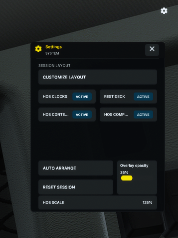

Game Overlay
Keep selected SimDuty tools available over ATS/ETS2, and understand when they are visible versus ready for interaction.
Overview
Getting started
Before starting the game, install simduty_overlay.dll beside simduty.dll in the game's bin/win_x64/plugins folder. Enable Game Overlay in SimDuty Settings. The viewport must be at least 1024 × 720; losing game focus disarms interaction.
Need the installation sequence? Read the First Run guide (English).
- With the plugins installed and Game Overlay enabled, open SimDuty before launching ATS or ETS2.
- If hidden, show the overlay with
Ctrl + Alt + O. - With the game focused, press
Insertto enable interaction; then use SYSTEM to toggle widgets. First-use Full does not show every widget.
Show, hide, and interact
The default show/hide shortcut is Ctrl + Alt + O. Press Insert to arm or disarm interaction. Hiding the overlay disarms interaction; showing it does not automatically enable interaction. ARM requires game focus and a valid state, and losing focus disarms it. The cursor indicator reflects the configured interaction behavior.
Widgets
The overlay has four widget surfaces. Full edition also includes HUB controls for Clocks, Context, and Deck visibility. Lite provides Clocks and Deck; Context, Compact, and HUB are Full-only. Use the overview image above to identify each widget.
HUB is a Full-edition control surface for showing or hiding Clocks, Context, and Deck.
Rest actions
Deck actions include Yard Move, Off Duty, Personal Conveyance, Custom Rest, Break, Rest, and Restart. Each action is an intent submitted through explicit confirmation in the Deck. SimDuty validates it against the current snapshot and duty state, so a listed action is not guaranteed to be eligible in every situation.
SYSTEM drawer
The SYSTEM button is in the upper-right corner of the game screen. The SYSTEM drawer is the normal place to customize the overlay, use Auto Arrange, reset its arrangement, toggle supported widgets, adjust opacity, and change HOS scale. Resetting the arrangement is distinct from the first-use default. Available controls depend on edition and widget.

Customize layout and scale
Customization lets you move and resize widgets; not every widget supports resizing. HOS scale choices are 100%, 125%, 150%, 175%, and 200%. Prefer a scale that keeps values readable without hiding necessary game context.
Settings and keybinds
Settings include overlay behavior, cursor speed and starting position, and the interaction indicator. Both shortcuts are configurable: Insert defaults to interaction, and Ctrl + Alt + O to show/hide. Layout and HOS scale are saved locally for future sessions.
HOS alerts
Clocks presents DRIVE, SHIFT, BREAK, and CYCLE gauges. Warning and Critical states use distinct colors and icons. Context summarizes operational messages. The hero capture's visible reminders are truck and trailer pre-trip inspection notices (DVIR), not HOS violations. The drawer can adjust HOS presentation scale.
For HOS timers, policy, and duty-state guidance: Read the HOS guide (English).
Limitations and troubleshooting
- Below 1024 × 720, the minimum viewport requirement is not met.
- If the game loses focus, ARM disarms; restore game focus and arm again when the state is valid.
- If the overlay is hidden, use Ctrl + Alt + O; remember that visibility does not arm it.
- If a Deck action is unavailable, check the current duty/snapshot state and follow any app validation or confirmation.
- DVIR interaction is not supported by the game overlay.
- If a widget or HUB control is absent, verify edition: Context, Compact, and HUB are Full-only.
For setup and recovery steps: Open Troubleshooting (English) · Setup guide (English).
Validation checklist
- Viewport is at least 1024 × 720 and the game has focus before arming.
- ARM state and visibility are checked as separate things.
- Widgets shown match the installed edition and intentional configuration.
- Rest actions are used only when available and after any required confirmation.
- Layout and HOS scale remain readable after restarting the app.
FAQ
Why is a visible overlay not responding?
Visibility and ARM are separate. Check game focus, ARM state, interaction behavior, and whether the action is eligible in the current state.
Why are some widgets missing?
Lite includes Clocks and Deck. Context, Compact, and HUB require Full, and widget visibility can also be toggled.
Why is a Deck rest action unavailable?
Eligibility depends on current duty state and fresh telemetry. Choose an available action, review its confirmation dialog, and let SimDuty validate the request.